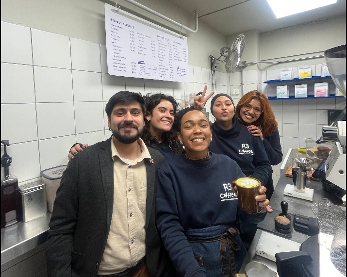
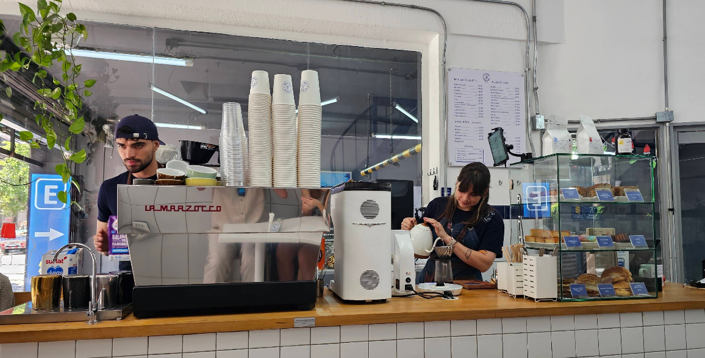
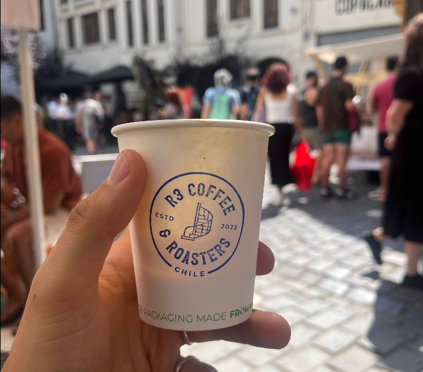
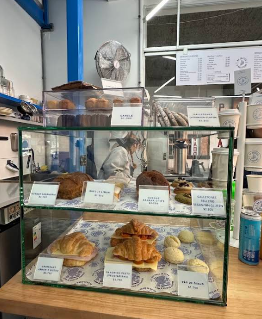
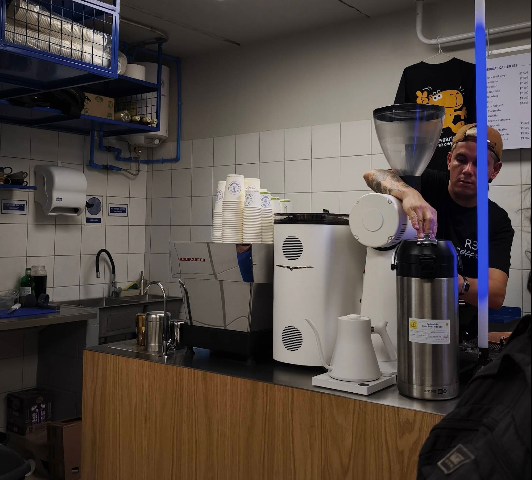

R3 Coffee & Roasters
Tostamos nuestro propio café en Santiago Centro desde 2022. Reducir, reutilizar y reciclar son las 3 R que le dan nombre a este proyecto de Julián y Yoseidy — dos baristas, tres locales, y una obsesión compartida por el buen grano.
Dos baristas, un tueste propio
Julián Lahm llegó desde Curitiba, Brasil, y Yoseidy Gutiérrez desde Mérida, Venezuela. Los dos se formaron como baristas en otras cafeterías de Santiago antes de juntarse para abrir R3 en 2022, en el barrio Bellas Artes. El nombre viene de las tres R de la sustentabilidad — reducir, reutilizar, reciclar — que se nota en los filtros de algodón reutilizables y los vasos de bambú que usan en el día a día. Hoy atienden ellos mismos la barra en sus tres locales, y suelen saludar por su nombre a quienes ya son clientes habituales.

Dentro de la barra




Visítanos
Nuestra carta
Opiniones de los 3 locales
"La gente dice que esta cafetería sirve delicioso café de especialidad, incluyendo flat whites, capuchinos y espresso tonics, así como pasteles como canelés y pastel de limón. Destacan los precios razonables y el ambiente acogedor y agradable. También les gusta el servicio amable y atento que brinda el personal."Escribe tu reseña →
"Lo mejor del local son los trabajadores, siempre son muy amables, te reciben y hacen los pedidos con muy buena energía. Me gusta mucho el matcha, la leche de avena que usan es muy buena, no me gusta mucho el sabor específico del café que usan, es como sabor frutal o floral que en lo personal no es mi favorito, a mi mamá le encanta, pero en general todo muy rico y ambiente agradable."Escribe tu reseña →
"Los comensales dicen que les gusta el café de alta calidad de esta cafetería, el cual muchos describen como delicioso y bien equilibrado, junto con sabrosos productos de pastelería como pan de queso y croissants. Aprecian también el ambiente agradable y acogedor, y a menudo mencionan el espacio limpio y la buena música. Los clientes elogian constantemente al personal por ser amable, atento y por brindar un servicio excelente."Escribe tu reseña →